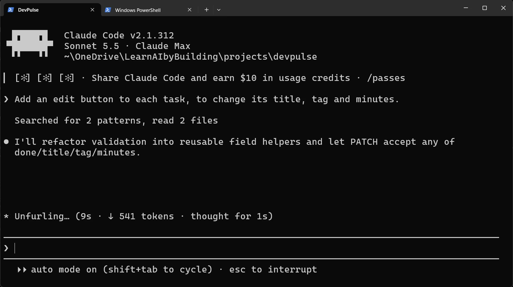
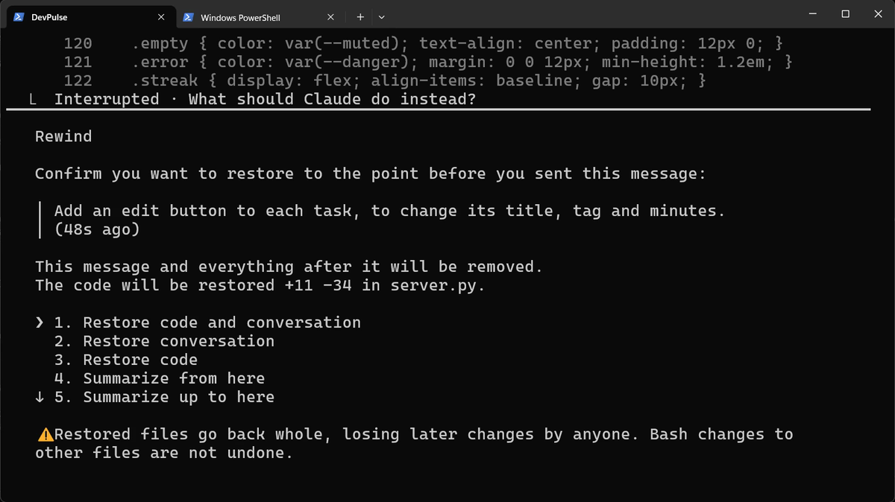
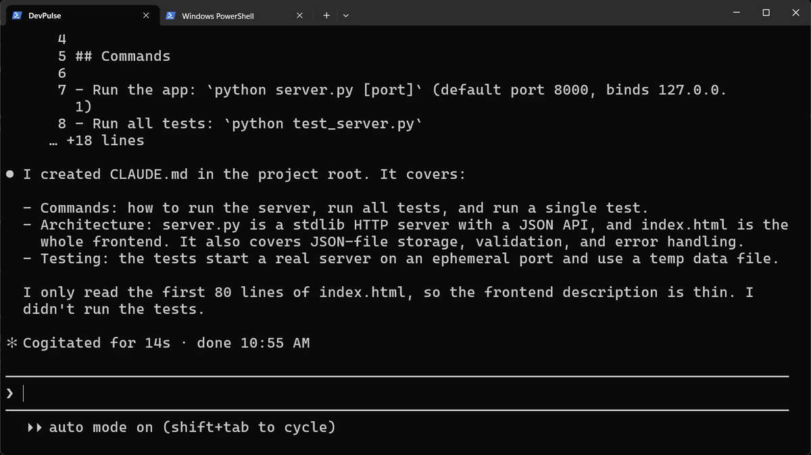
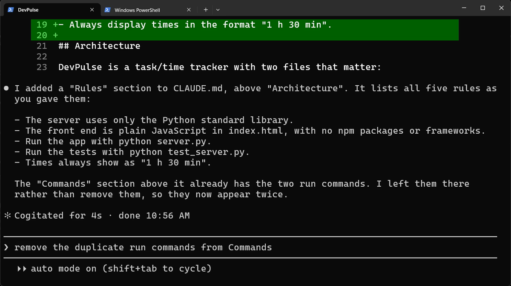
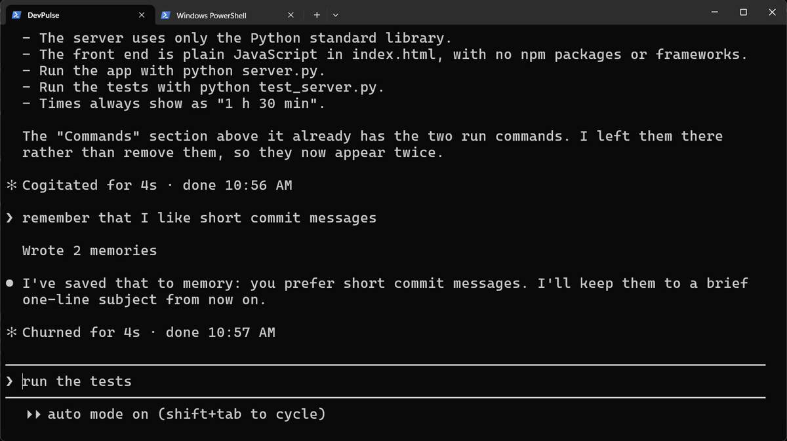
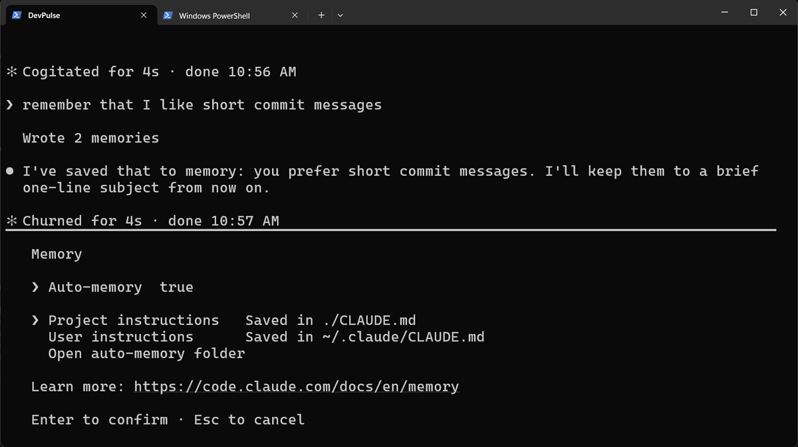
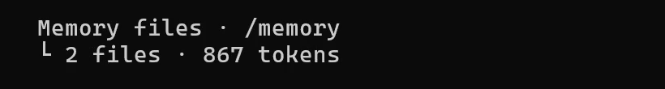
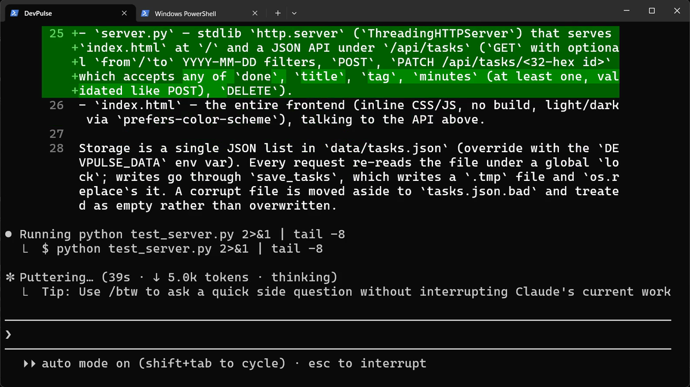
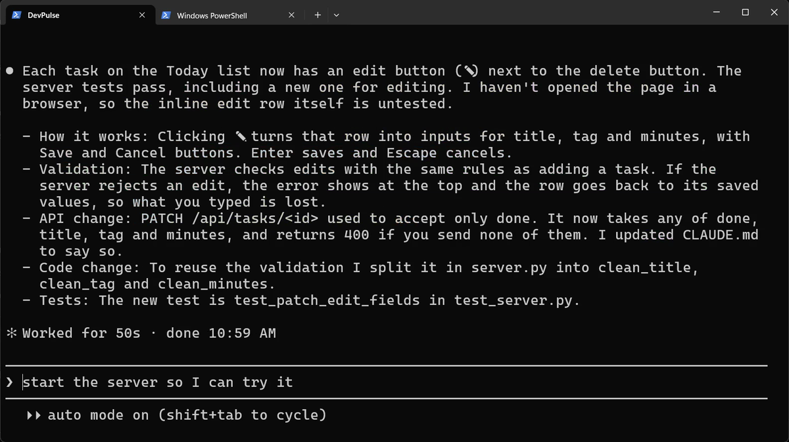

A new session starts with no memory
In chapter 2 we agreed a lot with Claude. The server uses only Python's standard library. Times show as "1 h 30 min". Tests run with one command.
Now close Claude Code and start it again. Ask for something small.

Say a new colleague joins every morning, a different one each day. Each one is clever. None of them was there yesterday.
How do you write your decisions down once, so every new session knows them before it starts?
Stop it, and go back
We do not want this edit yet. Press Esc to stop. In our recording, Claude had already changed server.py by then.
So press Esc twice, quickly. A list of your messages appears. Pick the message before the edit request.

server.py. Choose Restore code and conversation.The file is back exactly as it was. This is called rewind. Chapter 4 is all about undoing, so we only use it here.
Write the project down with /init
Claude Code reads one file at the start of every session: CLAUDE.md, in your project folder. Think of it as the note you leave for tomorrow's colleague. To write the first version, type one command.

CLAUDE.md: how to run it, how it is built, how it is tested. It also says what it skipped.Add the rules only you know
/init writes down what it can see in the code. It cannot see your decisions. Those you add yourself, in plain words.

Keep it short. Every line in CLAUDE.md is read in every session, whether it is needed or not.
Remember a preference of yours
Some things are about you, not the project. For those, just say "remember".

So there are two places. CLAUDE.md holds the project's rules and lives in the project folder. Auto memory holds your own habits and stays on your computer. We use the short commit messages in chapter 4.
Check what it will read
How do you know both are loaded? Two commands show you.

/memory lists the memory files and opens any of them. Press Esc to close it.
/context shows everything that fills the conversation. This is the line that matters here: our two memory files are loaded.Ask again, in a new session
Now the real test. Exit, start a fresh session, and ask for the same edit button.
Memory does not stop Claude reading the files it changes; that is good practice. It stops Claude re-deciding what we already agreed.

python test_server.py, our rule, without being told.
CLAUDE.md for the new API.The server is still running the old code, so restart it. Go to the second tab, press Ctrl+C, and start it again.
Refresh the page. Click the pencil next to a task, change the title and the minutes, and press Enter.
What memory costs
Memory is not free. CLAUDE.md is read in every session, so a long one fills the conversation before you type a word. Write rules, not essays.
And memory does not undo. When Claude makes a change you dislike, a note will not bring the old code back. Rewind did it once here. In chapter 4 we see where rewind stops, and why we need git.
Quick reference
| Command or key | What it does | Use it when |
|---|---|---|
/init | Writes CLAUDE.md from what it sees in your code | You start using Claude on a project |
Add our rules to CLAUDE.md: … | Adds your own decisions to CLAUDE.md | You decided something Claude cannot see in the code |
remember that … | Saves a preference of yours to auto memory | It is about you, not the project |
/memory | Lists the memory files and opens any of them | You want to see or edit what Claude remembers |
/context | Shows what fills the conversation | You want to check what is loaded |
Esc Esc | Rewinds code and conversation to an earlier message | Claude changed something you did not want |
Ctrl+C | Stops the running server, so you can start it again | The server must pick up changed code |
Add one rule, and test it
The goal: see one rule of yours change what Claude does.
The steps: ask Claude to add a rule to CLAUDE.md: every button has a tooltip that says what it does. Then /exit, start claude again, and ask for a "clear all done tasks" button.
Guess first: will the new button have a tooltip without you asking?
One question for you: which of your own habits would you put in auto memory, and which in CLAUDE.md?
References
Where each command and file on this page comes from. Every screenshot is from our own recording on 29 Oct 2026, Claude Code 2.1.312.
- Anthropic · Manage Claude's memory CLAUDE.md files, /init, auto memory, /memory, and how memory is loaded at the start of every session. https://code.claude.com/docs/en/memory
- Anthropic · Checkpointing Esc Esc rewinds the code and the conversation to an earlier message. https://code.claude.com/docs/en/checkpointing
- Anthropic · Interactive mode /context shows what fills the conversation, memory files included. https://code.claude.com/docs/en/interactive-mode
- My own recording · 29 Oct 2026, Windows 11 The same request, before and after CLAUDE.md; the second time it ran our test command and finished in 50 seconds.